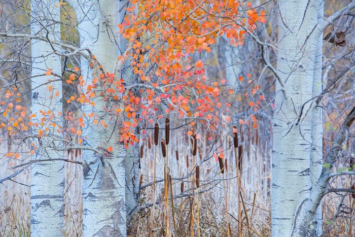
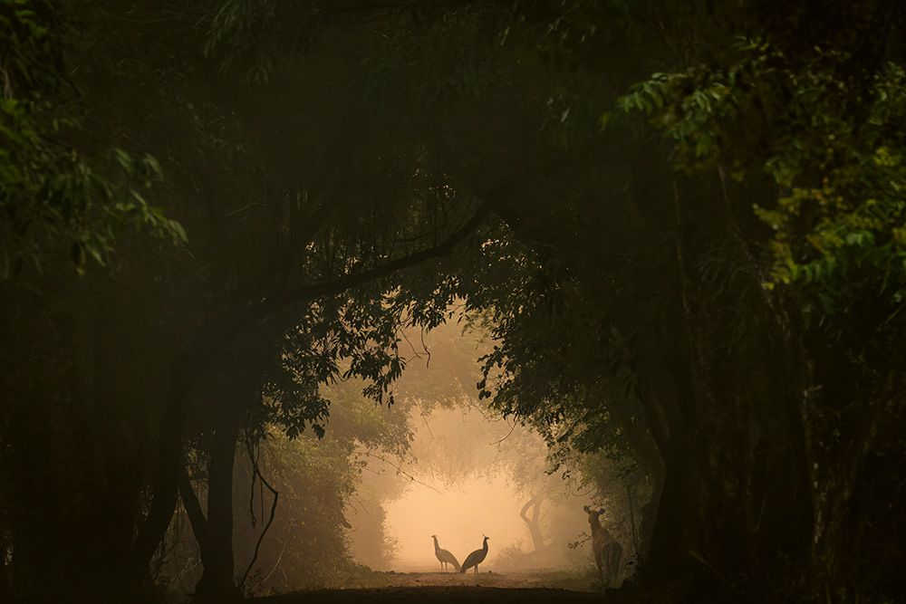
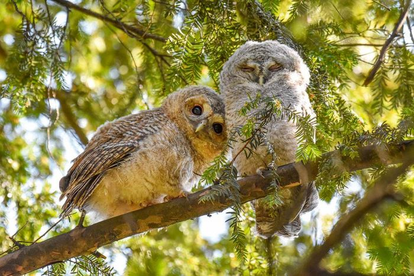
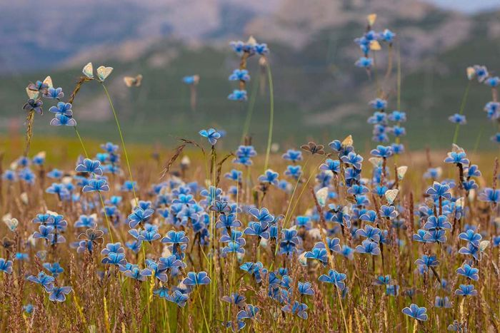
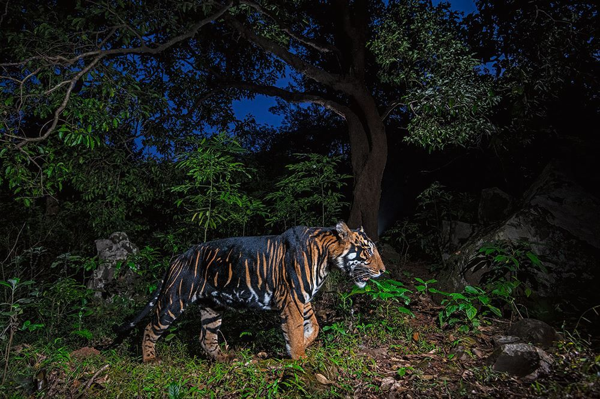

Photos
All photos were taken with a Nikon D60 camera, which was gathering dust at my parents’ house for close to two decades. I preferred this over my using phone as it was less distracting.





